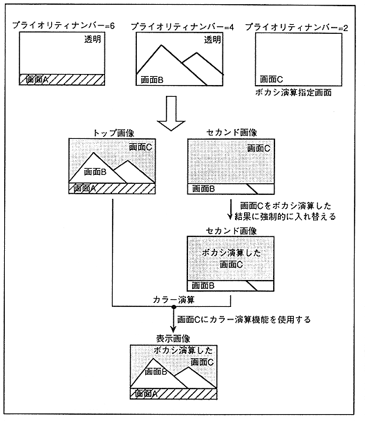

に 対 し て For the area where the specified screen is the top image or the second image, the addition result of the color data is forcibly changed to the second image. By calculating the color of this second image and the top image, you can display the blurred image.